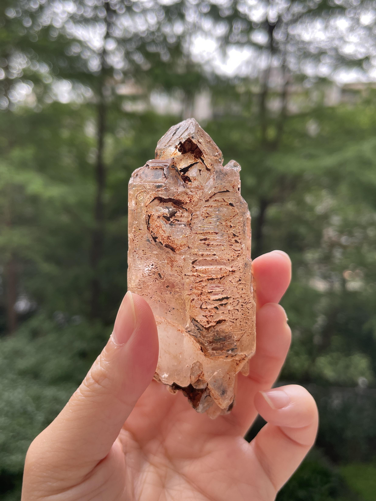
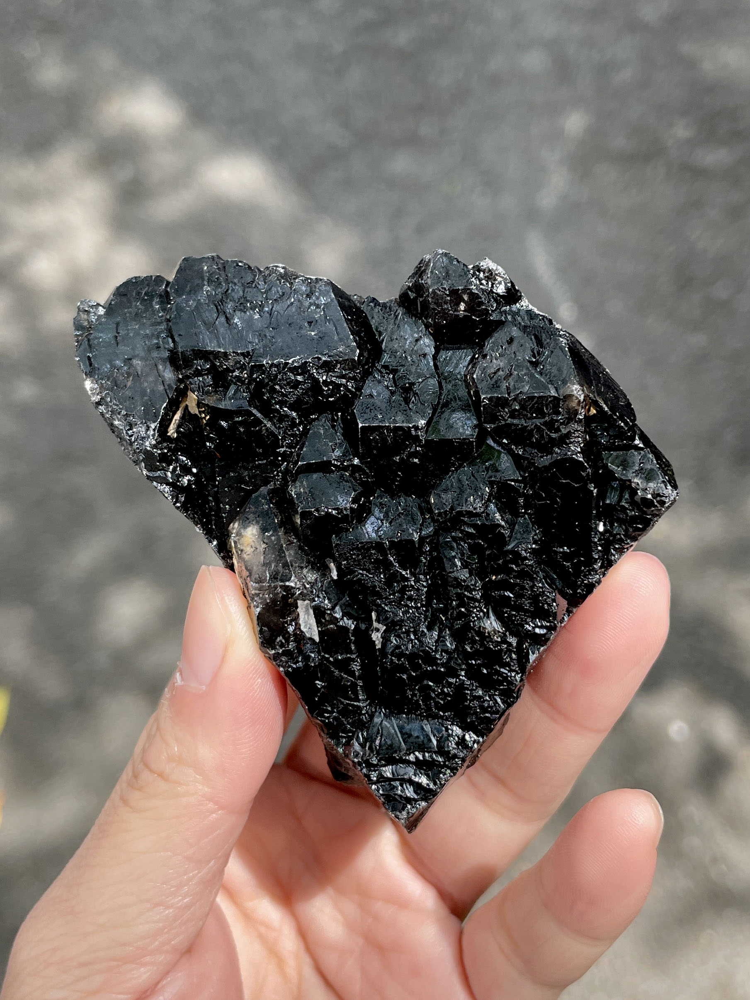
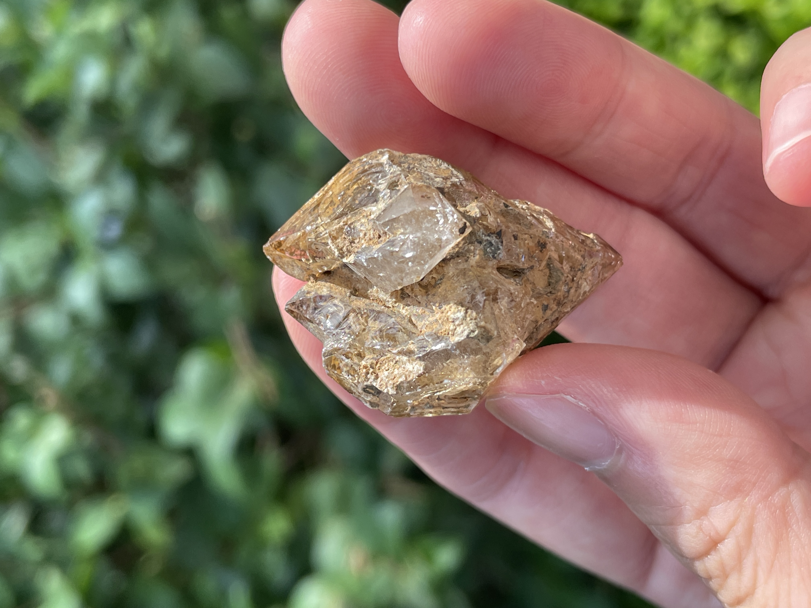

骨幹水晶 Skeletal Quartz

骸骨水晶
Skeletal Quartz
骨幹水晶
骨幹水晶是古老水晶中的一種，被認為是水晶中最深層的結晶。據說它已經存在了數億年，因此許多人尊稱它為「水晶老者」。骨幹水晶的外觀結晶是由於環境的長期壓力和累積形成的，深層的皺紋和錯綜交疊的紋路成為它的特徵。許多人相信其中隱藏著古老的智慧。
目前市場上的骨幹水晶可以大致分為骨骸水晶、鱷魚水晶、超七骨幹和教堂水晶等不同種類。
骨幹水晶的外表常常有蝕刻、夾雜物、擠壓物、生長線、彩虹、空洞和條紋等特徵，因此外觀有些類似鱗片。它們可能有多個緊密生長在一起的點，當你向內部觀察時，就像是一個小世界在其中。有時甚至會發現表面上呈現三角形的形狀，或者內部含有水氣泡（水膽水晶）、石油（油膽水晶）甚至是瀝青（巴基斯坦閃靈鑽）。
讓我們欣賞這些骨幹水晶，它們展現了古老智慧的奧妙。這些水晶通常被視為具有深度和神秘的能量來源。讓我們以敬畏之心與骨幹水晶連結，探索其中的智慧和力量。在與它們共處的過程中，讓我們感受到骨幹水晶所帶來的平靜與連接，並讓它們成為我們生活中的寶貴伴侶。

鱷魚水晶(Crocodile Quartz)
鱷魚水晶（Crocodile Quartz）通常指的是結構發生壘晶（疊晶）現象的水晶。這種水晶在同一支晶體上呈現不同時期的結晶形態，形成外觀一層又一層的結晶狀態。它因外觀類似鱷魚的皮膚而被稱為「鱷魚水晶」（Crocodile Quartz），通常呈現深灰色並帶有黑色。 壘晶（疊晶）現象是指水晶在生長過程中，一些晶體以橫向推疊的方式生長，受到側向壓力的影響而導致晶格錯位，形成一層又一層凸起的塊狀晶體。

骨幹水晶以其異常沉穩的能量而著稱，內部結構相當複雜。它常常呈現茶色、紫色和深色等色彩。這種水晶的能量可以協助我們承受沉重的壓力，使我們能夠更從容應對身體或心靈上的變化。部分骨幹水晶甚至保留著遠古時代的水源，這些水象徵著源遠流長的生命力。 讓我們珍愛骨幹水晶，它們散發著強大的能量和穩定的氛圍。在我們遭遇挑戰和壓力時，骨幹水晶能夠成為我們的支持和寄託。它們的存在提醒著我們生命的連續性，帶來來自遠古的智慧和生命力的傳承。
骨骸水晶(Skeletal Quartz)
骸骨水晶是一種特殊的水晶，形狀類似洋蔥，層層疊加，並具有類似空洞的骨架結構。在德國，人們稱其為「窗戶水晶」(Fenster)。骸骨水晶之所以得名，是因為當水晶在過飽和溶液中迅速結晶時，最初形成的晶體結構尚未完全填滿，隨後又長出下一層晶體結構。當溶液濃度適中時，水晶最終完成最後一層結晶，而中間的層與層之間常常含有水膽或其他礦物。 骸骨水晶的外觀形狀類似人體的骨骼，因此也有人稱之為「骨骼水晶」。它以白色、透明、深色和褐色為主，有時也會出現在紫水晶和黃水晶中，呈現紫色和黃色的特點。 骸骨水晶是一種能量極其強大的水晶。它具有獨特而複雜的結晶結構，使其能量更加深遠和豐富。這種水晶被視為極具靈性和治癒力量，可以幫助平衡身心靈，促進能量流動和提升靈性覺醒。 讓我們珍惜這些美麗而神奇的骸骨水晶，並從中汲取它們散發出的強大能量，讓我們的心靈得到療癒、平衡和啟發。
關於骸骨水晶及其靈性運用，《幸運石》一書中講得比較明白：
骸骨水晶是經過數千萬年甚至數億年的變化而形成的水晶，其結晶層層疊加，類似於年輪。這種古老的水晶被視為智慧之石，具有記錄史前信息的能力，包含大量關於人類誕生以前的古代記憶，甚至能夠預示人類和地球的未來。骸骨水晶是水晶的最終形態，不再生長。它能夠適用於所有脈輪，具有淨化、治療疾病和活化腦細胞等功效。
骸骨窗口水晶則是一種極其複雜的超高振頻水晶。在晶體的頂端或側面，常出現類似骨骼的框架結構，有時像是一個開著窗戶的房間，有時像是一層層平行宇宙。骸骨水晶是地球上非常古老的水晶種類，大部分攜帶著人類紀元之前的靈性訊息，因此具有非常純淨的能量。它能與我們所有的脈輪相對應，是進階療癒和冥想的優秀選擇。
這些關於骸骨水晶的特性和靈性功效，揭示了它們在靈性實踐中的重要性和價值。它們是連結過去、現在和未來的橋樑，為我們帶來智慧、平衡和療癒。讓我們珍惜這些古老而神奇的水晶，並在靈性探索中體驗它們帶來的恩賜。
